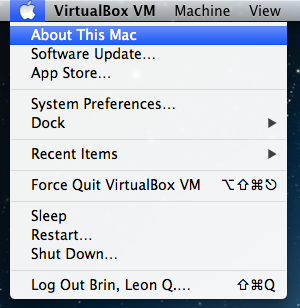
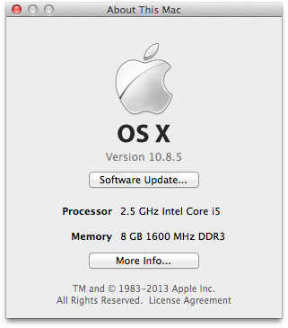
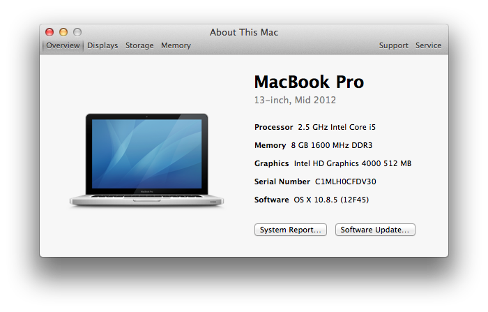
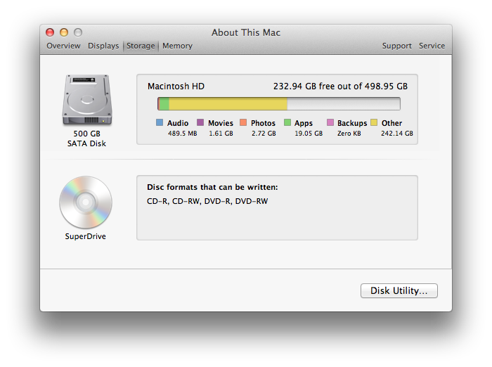
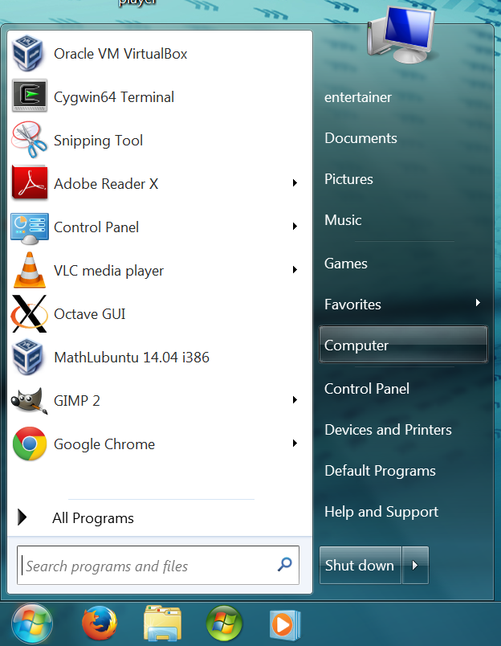
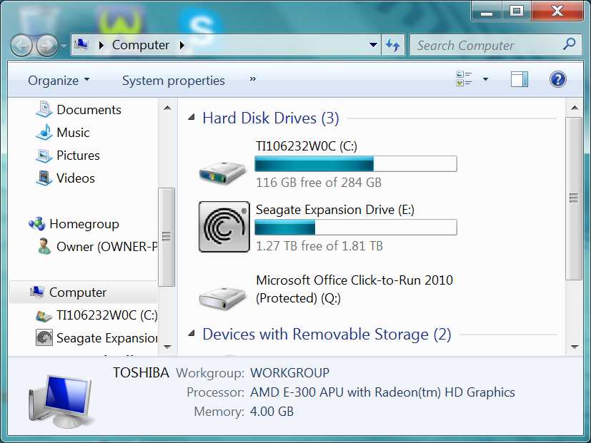
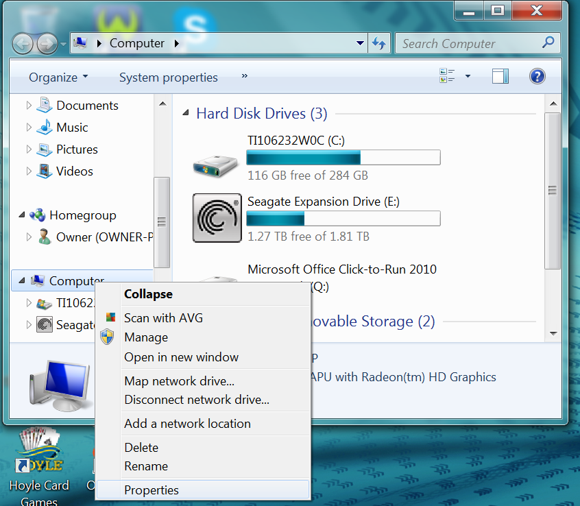
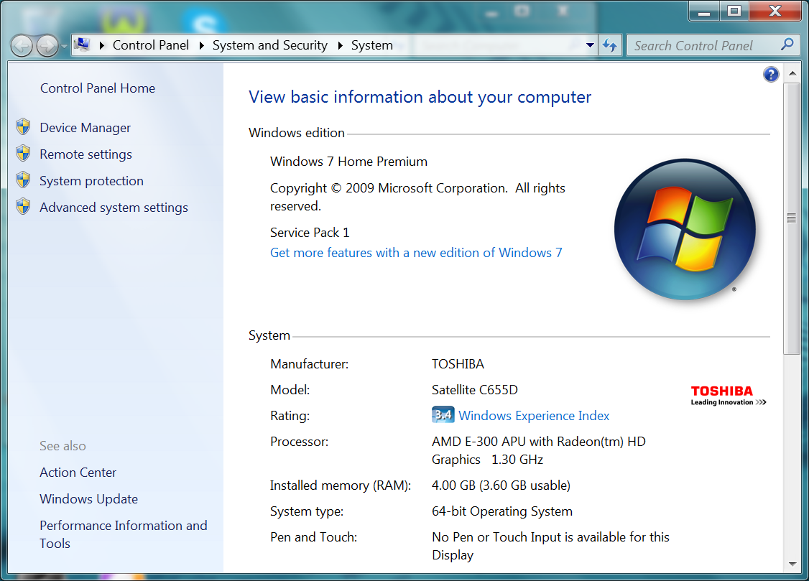

Checking your Machine's Resources
Your computer will likely perform reasonably with Mathbuntu in a virtual machine if it has at least
- a 1GHz processor
- 2 GB RAM. To be more specific:
- for MathLubuntu:
- Windows 7 32-bit: 2 GB RAM
- Windows 8 or Windows 7 64-bit: 3 GB RAM
- MacOS X: 3 GB RAM
- for MathUbuntu or MathKubuntu:
- Windows 7 32-bit: 3 GB RAM
- Windows 8 or Windows 7 64-bit: 4 GB RAM
- MacOS X: 4 GB RAM
- for MathLubuntu:
- 30 GB available disk space
The processor speed is not a requirement, just a guideline. Slower processors may be too slow to run a virtual machine tolerably. That is up to you to decide. The RAM and disk space are firmer guidelines. You may be able to get away with less, but it is not recommended you try. Results will almost certainly be disappointing.
Mouse over the thumbnails on the left for step-by-step instructions and screen shots on how to check your machine's resources.








Message goes here.